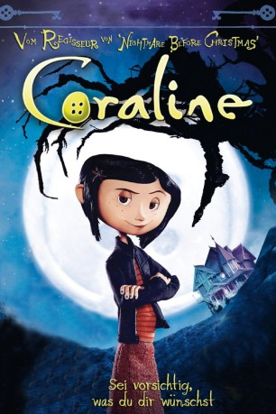

 
 IMDB-Wertung: 7.7 / 10
IMDB-Wertung: 7.7 / 10  Metascore:
Metascore: 
Die elfjährige Coraline zieht mit ihren Eltern in eine neue Wohnung in einer viktorianischen Villa in Oregon mit seltsamer Nachbarschaft. Dort wohnen etwa ein russischer Akrobat und sein Mäusezirkus sowie zwei ehemalige Erotikdarstellerinnen. Eines Tages entdeckt Coraline eine Geheimtür und gelangt in eine fantastischen Parallelwelt, in der sich ihre anderen Eltern liebevoll um sie kümmern. Anstelle der Augen haben sie schwarze Knöpfe. Der Traum wandelt sich zum Albtraum, als ihre andere Mutter ihr ebenfalls Knopfaugen verpassen will.
Jahr: 2009
Dauer: 100 Minuten
FSK: 6
Land: USA Studio: Focus FeaturesTonspuren: DD5.1 - ,
Untertitel:
Auflösung: 1080p (1920x1080) Größe: 7710 MB
Genre: Fantasy, Animation/Trick
Regisseur: Henry Selick
Drehbuch: Allan Moyle
Soundtrack:
Darsteller:
Datei: X:\Kinder Filme (A-F)\Coraline (2009, FSK6, 1920x1080) 3D.mkv seit 29.04.2016
Festplatte: Kinder-Filme+Trick
 Es gibt insgesamt 68 Filme in der Gruppe 'Kinder Filme (A-F)'
Es gibt insgesamt 68 Filme in der Gruppe 'Kinder Filme (A-F)'